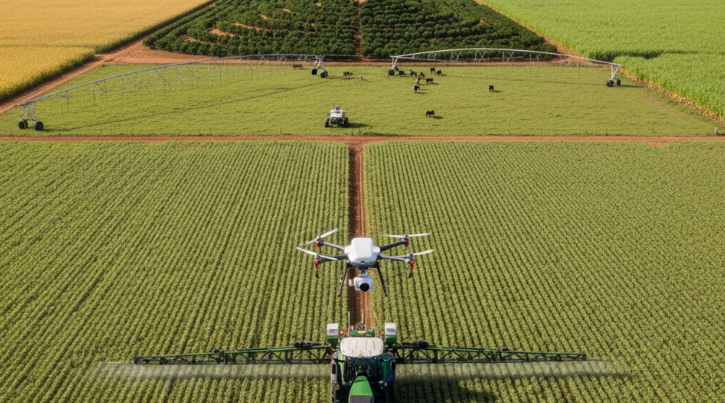
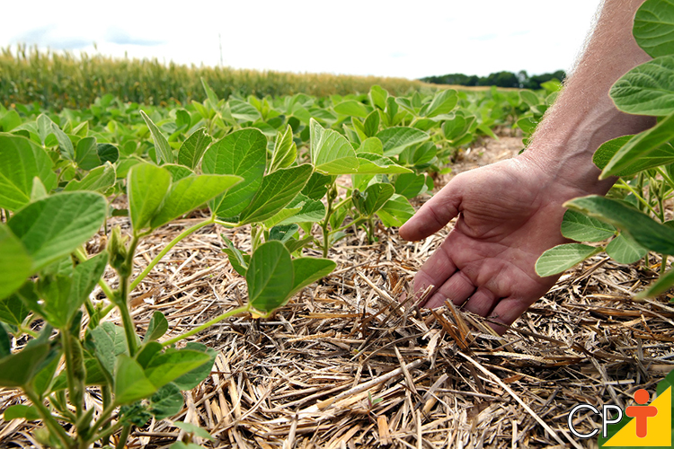
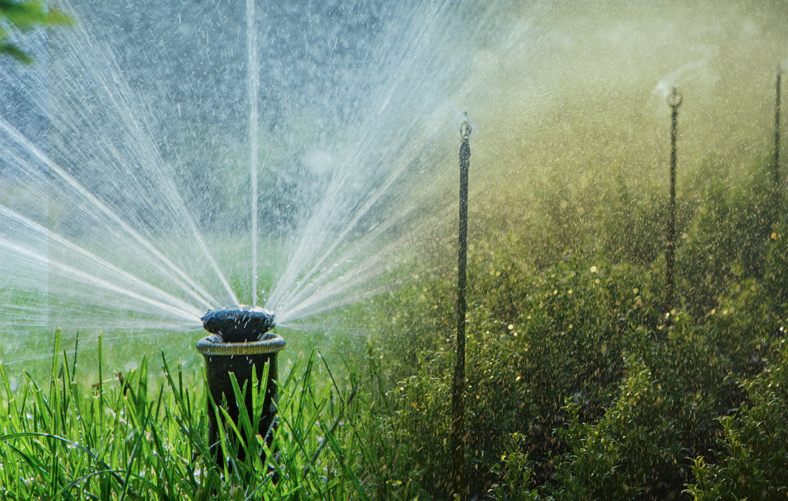
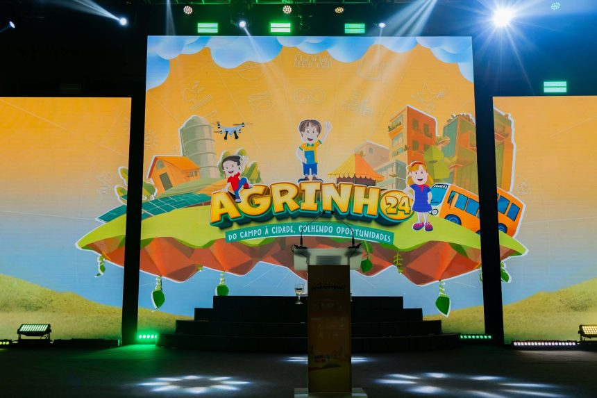

O que é e como alcançar o equilíbrio com o meio ambiente.
O uso de inteligência artificial, sensores e drones revolucionou o campo. Através do monitoramento em tempo real, os agricultores conseguem aplicar água e nutrientes na quantidade exata de que a planta precisa. Isso reduz drasticamente o desperdício de recursos escassos, otimiza a colheita e protege os lençóis freáticos contra o excesso de produtos químicos.

Manter o solo vivo é o maior desafio do século. Práticas como o plantio direto, onde a palha da colheita anterior protege a terra, e a rotação de culturas evitam a erosão e a degradação dos nutrientes. Esse ciclo autossustentável garante que o agronegócio continue forte e produtivo, sem avançar sobre áreas de mata nativa e respeitando a biodiversidade local.

A agricultura moderna depende da eficiência hídrica. Sistemas automatizados de irrigação por gotejamento direcionam a água diretamente para as raízes das plantas, reduzindo a evaporação e economizando até 60% do recurso se comparado aos métodos tradicionais. Além disso, a captação da água da chuva e a proteção das matas ciliares ao redor de rios e nascentes garantem a segurança hídrica necessária para abastecer as cidades e o campo.

Criado pelo SENAR-PR, o Agrinho é o maior programa de responsabilidade social do Estado do Paraná. Há décadas, ele atua nas escolas públicas e particulares, levando uma proposta pedagógica focada na cidadania, na saúde, na preservação ambiental e no desenvolvimento sustentável, conectando diretamente a realidade do campo com a sala de aula.
Com o passar dos anos, o programa evoluiu e incorporou a tecnologia digital. Hoje, ele incentiva os estudantes a utilizarem ferramentas modernas de programação, robótica e inteligência artificial para solucionar problemas reais do ecossistema e do agronegócio brasileiro.
Em 2026, o Concurso desafia especificamente a nossa criatividade técnica para criar soluções computacionais que demonstrem como a produção em larga escala e a conservação da natureza podem coexistir em harmonia através do código.
